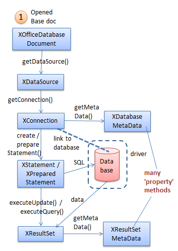
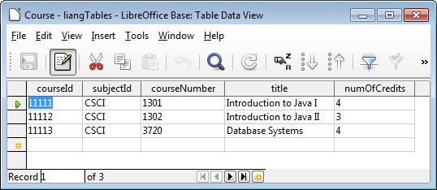
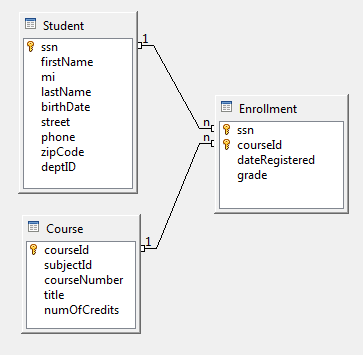
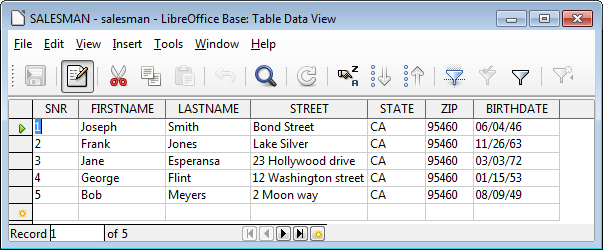
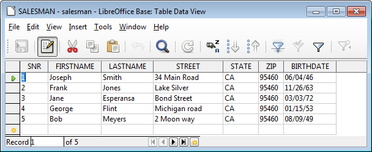

Chapter 35. Examining Base Documents
Topics
Querying an Embedded HSQLDB Database; Using Metadata when Querying; Debugging Database Code; Creating a Base Document; Processing Multiple SQL Commands; Displaying Table Relationships; Prepared Statements; Scrollable and Updatable Result Sets; Converting a Database to Text
Example folders: "Base Tests" and "Utils"
This chapter looks at programming with Base documents using the XOfficeDatabaseDocument interface, which was labelled with a (1) in Figure 5 of the previous chapter.
Figure 1 repeats that figure but without the alternative query approaches (labels (2), (3), and (4)).

Figure 1. Querying a Base Document.
XOfficeDatabaseDocument accesses a database via the ODB document that's connected to the database. The connection can take two forms – the database can be embedded inside the ODB file, or the connection can be a URL which links to an external database. Most of my examples will utilize ODB files that contain embedded databases.
1. Querying an Embedded HSQLDB Database
The following SimpleQuery.java example shows how to query a HSQLDB database embedded inside an ODB file called liangTables.odb. It has three tables, called Course, Enrollment, and Student. Figure 2 shows the data in the Course table, displayed by Base. The filename reflects the fact that the database is based on one in Y. Daniel Liang's "Introduction to Java Programming" textbook.

Figure 2. The Course Table in liangTables.odb.
Although SimpleQuery.java only queries liangTables.odb, the support methods it utilizes are capable of accessing other kinds of ODB document, including ones containing embedded Firebird databases, and database URLs.
The main() method for SimpleQuery.java is given below:
private static final String FNM = "liangTables.odb";
// in SimpleQuery.java public static void main(String[] args) { XComponentLoader loader = Lo.loadOffice(); XOfficeDatabaseDocument dbDoc = Base.openBaseDoc(FNM, loader); if (dbDoc == null) { System.out.println("Could not open database " + FNM); Lo.closeOffice(); return; }
XConnection conn = null; try { XDataSource dataSource = dbDoc.getDataSource(); conn = dataSource.getConnection("", ""); // no login/password XStatement statement = conn.createStatement();
// first query
XResultSet rs =
statement.executeQuery("SELECT * FROM \"Course\"");
XRow xRow = Lo.qi(XRow.class, rs);
System.out.println("CourseID \tSubjectID \tCourseNumber
\tTitle \tNumOfCredits");
System.out.println("=========================");
while(rs.next())
System.out.println( xRow.getString(1) + ", \t" +
xRow.getString(2) + ", \t" +
xRow.getInt(3) + ", \t" +
xRow.getString(4) + ", " +
xRow.getInt(5) );
System.out.println("=========================");
// second query
rs = statement.executeQuery(
"SELECT \"courseNumber\", \"title\" FROM \"Course\"");
xRow = Lo.qi(XRow.class, rs);
XColumnLocate xLoc = Lo.qi( XColumnLocate.class, rs);
System.out.println("CourseNumber \tTitle");
System.out.println("====================================");
while(rs.next())
System.out.println(
xRow.getString( xLoc.findColumn("courseNumber")) +
", \t" +
xRow.getString( xLoc.findColumn("title")) );
System.out.println("====================================");
} catch(SQLException e) { System.out.println(e); }
Base.closeConnection(conn); Base.closeBaseDoc(dbDoc); Lo.closeOffice(); } // end of main()
The code is similar to the JDBC program described in the previous chapter, but uses the sdbc interface, starting with XOfficeDatabaseDocument.
Base.openBaseDoc() loads the document as an instance of XComponent, then casts it
to XOfficeDatabaseDocument. The relationship between XOfficeDatabaseDocument
and XComponent is shown in Figure 5.

Figure 5. Obtaining an OfficeDataBaseDocument Instance.
The Base.openBaseDoc() method:
// in the Base class public static XOfficeDatabaseDocument openBaseDoc( String fnm, XComponentLoader loader) { XComponent doc = Lo.openDoc(fnm, loader); if (doc == null) { System.out.println("Document is null"); return null; }
if (Info.reportDocType(doc) != Lo.BASE) { System.out.println("Not a database doc; closing " + fnm); Lo.closeDoc(doc); return null; }
// cast XComponent to XOfficeDatabaseDocument
XOfficeDatabaseDocument dbDoc =
Lo.qi(XOfficeDatabaseDocument.class, doc);
if (dbDoc == null) {
System.out.println("Not a database doc; closing " + fnm);
Lo.closeDoc(doc);
return null;
}
return dbDoc;
} // end of openDoc()
Database details, such as whether it's embedded inside or linked to the ODB file, and its type (e.g. HSQLDB, Firebird), are stored in the DataSource service, which is accessed by XOfficeDatabaseDocument.getDataSource(): // in SimpleQuery.java...
XDataSource dataSource = dbDoc.getDataSource();
The simplest way of using the data source is to connect to the database by calling
getConnection():
XConnection conn = dataSource.getConnection("", "");
// no login/password
XConnection.createStatement() returns an XStatement reference, which can be used
to send SQL queries to the database. A query's result set is stored in an XResultSet
instance:
// in SimpleQuery.java...
XStatement statement = conn.createStatement(); XResultSet rs = statement.executeQuery("SELECT * FROM \"Course\"");
Sdbc differs a little from JDBC in how the rows of a result set are examined. A row is represented by a XRow instance which is a cast of XResultSet. However, the set's cursor is still moved through the rows using XResultSet.next():
// in SimpleQuery.java...
XRow xRow = Lo.qi(XRow.class, rs);
while(rs.next())
System.out.println( xRow.getString(1) + ", \t" +
xRow.getString(2) + ", \t" +
xRow.getInt(3) + ", \t" +
xRow.getString(4) + ", " +
xRow.getInt(5) );
Access to data through XRow.getXXX() methods is only possible with column indices. Column names can be used indirectly via XColumnLocate.findColumn() which maps names to indices:
// in SimpleQuery.java...
rs = statement.executeQuery( "SELECT \"courseNumber\", \"title\" FROM \"Course\"");
xRow = Lo.qi(XRow.class, rs); XColumnLocate xLoc = Lo.qi( XColumnLocate.class, rs);
System.out.println("CourseNumber \tTitle");
System.out.println("====================================");
while(rs.next())
System.out.println(
xRow.getString( xLoc.findColumn("courseNumber")) +
", \t" +
xRow.getString( xLoc.findColumn("title")) );
System.out.println("====================================");
The output from SimpleQuery.java is shown in Figure 6.

Figure 6. SimpleQuery.java Output.
The program ends by closing the connection to the database (with Base.closeConnection()) and the ODB file (with Base.closeBaseDoc()). Both methods cast their arguments to XCloseable, and then call XCloseable.close().
2. Using Metadata when Querying a Base Document
Metadata is information about a database, such as a table's schema, and driver and database engine details. There are four sources of such information in the Base API: the DataSource service; the DatabaseDefinition services; the sdbc metadata services, DatabaseMetaData and ResultSetMetaData.
SimpleQuery.java is hardwired to query the Course table in the liangTables.odb database, and prints rather ugly looking output (see Figure 6). Both these issues can be addressed by utilizing database metadata information, as in DBQuery.java described next. I'll use the program to illustrate how the four metadata services can be employed.
2.1. The DataSource Service
The DataSource service is depicted in Figure 7.

Figure 7. The DataSource Service and Interface.
A simple way to access a data source's properties is with my Props.java utility class.
For example, the following code prints all of its properties:
// part of DBQuery.java...
XOfficeDatabaseDocument dbDoc = ... // reference to a Base doc; XDataSource dataSource = dbDoc.getDataSource(); Props.showObjProps("Data Source", dataSource);
This information includes the data source type (e.g. whether it is an embedded HSQLDB or Firebird database), whether a password is required to access the tables, and whether the database is read-only. My Base utility class includes several methods that access this information individually. For example:
// part of DBQuery.java...
System.out.println("Database type: " +
Base.getDataSourceType(dbDoc));
System.out.println("Is embedded? " + Base.isEmbedded(dbDoc));
XDataSource dataSource = dbDoc.getDataSource(); Base.printDataSourceInfo(dataSource);
System.out.println("Is password required: " +
Base.isPasswordRequired(dataSource));
System.out.println("Is read-only: " + Base.isReadOnly(dataSource));
For the liangTables.odb file, the listed details are:
Database type: sdbc:embedded:hsqldb Is embedded? true
Data Source Properties Info == [Lcom.sun.star.beans.PropertyValue;@cf768c IsPasswordRequired == false IsReadOnly == false // ... many more lines // :
Is password required: false Is read-only: false
2.2. The DatabaseDefinition Services
After a database connection is established, metadata about the structure of the database, its tables, columns, user and group permissions, becomes available. It's accessible through services in the sdbcx module, starting from DatabaseDefinition shown in Figure 8.

Figure 8. Accessing Database MetaData via a Connection.
For example, Base.getTablesNames() casts an XConnection reference to a XTablesSupplier, which gives access to information about the database's tables:
// in the Base class
public static ArrayList
Lo.qi(XTablesSupplier.class, conn);
XNameAccess tables = tblsSupplier.getTables();
String[] tableNms = tables.getElementNames();
return new ArrayList
Base.getTablesNames() is called in DBQuery.java like so:
// part of DBQuery.java...
XConnection conn =
dataSource.getConnection("", ""); // no login/password
ArrayList
The names of the three tables in liangTables.odb are reported as:
No. of tables: 3 [Course, Enrollment, Student]
Just as XTablesSupplier is for supplying table information, there are similarly named 'Supplier' interfaces for retrieving details about the database's views, groups, and user accounts. Base.displayTablesInfo() prints all of this information, but the output can be very large if there are more than one or two tables in the database.
2.3. The DatabaseMetaData Service
Another way to obtain metadata is to utilize the JDBC-inspired XDatabaseMetaData interface by calling XConnection.getMetaData():
XConnection conn = ... // a connection to the database; XDatabaseMetaData md = conn.getMetaData();
The metadata includes database engine and driver details, as reported by Base.reportDBInfo():
// in the Base class public static void reportDBInfo(XConnection conn) { try { XDatabaseMetaData md = conn.getMetaData();
String productName = md.getDatabaseProductName();
String productVersion = md.getDatabaseProductVersion();
if ((productName == null) || productName.equals(""))
System.out.println("No database info found");
else
System.out.println("DB: " + productName +
" v." + productVersion);
String driverName = md.getDriverName();
String driverVersion = md.getDriverVersion();
if ((driverName == null) || driverName.equals(""))
System.out.println("No driver info found");
else
System.out.println("SDBC driver: " + driverName +
" v." + driverVersion);
}
catch (SQLException e)
{ System.out.println(e); }
} // end of reportDBInfo()
The output for liangTables.odb shows that it utilizes HSQLDB:
DB: HSQL Database Engine v.1.8.0 SDBC driver: HSQL Database Engine Driver v.1.8.0
Unfortunately the XDatabaseMetaData methods don't return anything useful for embedded Firebird databases. The output is:
No database info found No driver info found
However, data source metadata is available for Firebird via Base.getDataSourceType():
System.out.println("Database type: " +
Base.getDataSourceType(dbDoc));
For the same Firebird database, it reports:
Database type: sdbc:embedded:firebird
This illustrates that the functionalities of the HSQLDB and Firebird engines aren't
identical, and that the DataSource (section 2.1) and DataDefinition services (section
2.2) may produce more information than the sdbc metadata approach (this section).
Base.reportSQLTypes() and Base.reportFunctionSupport() utilize XDatabaseMetaData. The former returns a list of SQL types, and the latter a list of functions supported by the database engine; their use is illustrated in DBQuery.java.
2.4. The ResultSetMetaData Service
XResultSetMetaData data allows a result set to be better formatted. It's used in Base.printResultSet() to print results sets and in Base.displayResultSet() to fill a scrollable JTable displayed inside a JFrame.
The following query prints a result set to standard output:
// part of DBQuery.java...
ArrayList
tableNames.get(0) + "\"", conn);
Base.printResultSet(rs);
The query employs the first string from the tableNames list as the SELECT's table.
The output for liangTables.odb is:
courseId, subjectId, courseNumber, title, numOfCredits
11111, CSCI, 1301, Introduction to Java I, 4
11112, CSCI, 1302, Introduction to Java II, 3
11113, CSCI, 3720, Database Systems, 4
The formatting isn't perfect since its quite tricky to determine the maximum width required for a column. Base.printResultSet() uses XResultSetMetaData to determine the number of columns and their names:
// in the Base class public static void printResultSet(XResultSet rs) { if (rs == null) { System.out.println("No results set to print"); return; }
try {
XResultSetMetaDataSupplier rsMetaSupp =
Lo.qi(XResultSetMetaDataSupplier.class, rs);
XResultSetMetaData rsmd = rsMetaSupp.getMetaData();
int tableWidth = 0;
int numCols = rsmd.getColumnCount();
String colName;
for (int i = 0; i < numCols; i++) {
if (i > 0) {
System.out.print(", ");
tableWidth += 2;
}
colName = rsmd.getColumnName(i+1);
System.out.printf("%10s", colName);
tableWidth += Math.max(colName.length(), 10);
}
System.out.println();
for (int i=0; i < tableWidth; i++)
System.out.print("-");
System.out.println();
XRow xRow = Lo.qi(XRow.class, rs);
while (rs.next()) {
for (int i = 0; i < numCols; i++) {
if (i > 0)
System.out.print(", ");
System.out.printf("%10s", xRow.getString(i+1) );
}
System.out.println();
}
System.out.println();
} catch(SQLException e) { System.out.println(e); } } // end of printResultSet()
Fortunately, the hard work of writing a good ASCII-based table printer has already been done by Hami Galip Torun with his DBTablePrinter class, available from https://github.com/htorun/dbtableprinter. It offers printTable() and printResultSet() for printing a JDBC table and result set in beautiful ASCII.
I made a few small changes to his class to allow it to handle sdbc tables and result sets, which consisted mainly of changing the Connection, Statement, and ResultSet names to XConnection, XStatement, and XResultSet. I've also renamed the class as BaseTablePrinter so I could keep using Torun's original DBTablePrinter for printing JDBC results.
The result set shown above is printed by: // part of DBQuery.java...
BaseTablePrinter.printResultSet(rs);
The output:
Printing 3 rows from table Course +----------+-----------+--------------+-------------------------+--------------+ | courseId | subjectId | courseNumber | title | numOfCredits | +----------+-----------+--------------+-------------------------+--------------+ | 11111 | CSCI | 1301 | Introduction to Java I | 4 | +----------+-----------+--------------+-------------------------+--------------+ | 11112 | CSCI | 1302 | Introduction to Java II | 3 | +----------+-----------+--------------+-------------------------+--------------+ | 11113 | CSCI | 3720 | Database Systems | 4 | +----------+-----------+--------------+-------------------------+--------------+
A graphical display is implemented by my Base.displayResultSet(), which uses the result set to fill a JTable GUI component inside a JFrame. This result set from above is displayed by: // part of DBQuery.java...
Base.displayResultSet(rs); Figure 9 shows the JFrame.

Figure 9. The Result Set Displayed in a Window.
There are some problems with the layout: too much vertical space below the table, and column formatting which shows all the data, but not all the headings. However, the user can resize the window and columns, so these drawbacks aren't serious.
displayResultSet() is coded as:
// in the Base class public static void displayResultSet(XResultSet rs) { displayResultSet(rs, "Result set", 0); }
public static void displayResultSet(XResultSet rs,
String title, int offset)
{ if (rs == null) {
System.out.println("No results set to display");
return;
}
try {
XResultSetMetaDataSupplier rsMetaSupp =
Lo.qi(XResultSetMetaDataSupplier.class, rs);
XResultSetMetaData rsmd = rsMetaSupp.getMetaData();
// names of columns
int numCols = rsmd.getColumnCount();
String[] headers = new String[numCols];
for (int i=0; i < numCols; i++) {
headers[i] = rsmd.getColumnName(i+1);
}
// create table with column heads
DefaultTableModel tableModel = new DefaultTableModel(headers, 0);
JTable table = new JTable(tableModel);
// fill table with XResultSet contents, one row at a time
XRow xRow = Lo.qi(XRow.class, rs);
while (rs.next())
tableModel.addRow( getRow(xRow, numCols));
// resize columns so data is visible
table.setAutoResizeMode(JTable.AUTO_RESIZE_ALL_COLUMNS);
resizeColumnWidth(table);
SwingUtilities.invokeLater( new Runnable() {
public void run()
{ JFrame frame = new JFrame();
frame.setBounds(offset, offset, 400, 200);
frame.setTitle(title);
frame.setDefaultCloseOperation(JFrame.DISPOSE_ON_CLOSE);
// so JFrame closure doesn't kill the main prog
frame.add(new JScrollPane(table), BorderLayout.CENTER);
frame.setVisible(true);
}
});
} catch(SQLException e) { System.out.println(e); } } // end of displayResultSet()
This sdbc display code is different from the JDBC version in only two ways. The first is the use of XResultSetMetaDataSupplier to access the result set's metadata:
// part of Base.displayResultSet()...
XResultSetMetaDataSupplier rsMetaSupp =
Lo.qi(XResultSetMetaDataSupplier.class, rs);
XResultSetMetaData rsmd = rsMetaSupp.getMetaData();
The second is the utilization of an XRow instance to refer to each row in the result set:
// part of Base.displayResultSet()...
XRow xRow = Lo.qi(XRow.class, rs); while (rs.next()) tableModel.addRow( getRow(xRow, numCols));
3. Debugging Database Code
A useful way to debug larger programs is to display the database tables they're manipulating. The simplest way of doing this is to open the tables inside Base.
A call to GUI.setVisible() makes Base and the loaded file visible. However, Base's default behavior is to display its Forms view rather than the Tables view. Even after changing to the Tables view, only the names of the tables are listed not their contents.
Base.showTables() deals with these issues, so that the following call:
// part of DBQuery.java...
Base.showTables(dbDoc);
Lo.waitEnter();
produces the windows shown in Figure 10 when liangTables.odb is being processed.

Figure 10. The liangTables.odb Tables in Base.
The call to Lo.waitEnter() gives the user a chance to examine the tables before the program continues.
A drawback of this approach is that having open table windows at the end of the program often causes Office to crash after Lo.closeOffice() is called.
Base.showTables() utilizes a series of dispatch commands to make the GUI visible, show the Tables view, and open the tables in separate windows:
// in the Base class public static void showTables(XOfficeDatabaseDocument dbDoc) // open windows for all the tables in the doc { showTablesView(dbDoc); Lo.delay(500); // wait for Tables View to appear Lo.dispatchCmd("SelectAll"); Lo.dispatchCmd("DBTableOpen"); // open all tables } // end of showTables()
public static void showTablesView(XOfficeDatabaseDocument dbDoc) // make Base visible, and switch to its Table view { XComponent doc = Lo.qi(XComponent.class, dbDoc); GUI.setVisible(doc, true); Lo.delay(500); // wait for GUI to appear Lo.dispatchCmd("DBViewTables"); } // end of showTablesView()
As usual, using dispatches makes the code very fragile. For example, consider the "SelectAll" dispatch which causes Office to select all the table names in the Tables View. To be more precise, "SelectAll" selects everything in the active window, which should be the Tables view, but could easily be something else if the user clicked on another window at the wrong time.
My Base class offers two alternatives to showTables(): Base.printDatabase() and Base.displayDatabase(); the first builds upon Hami Galip Torun's class to generate textual output of every table in the database, while the second uses my Base.displayResultSet() to render each table in its own JFrame. They are called like so: // part of DBQuery.java...
Base.printDatabase(conn);
Base.displayDatabase(conn);
Base.displayDatabase() is a better choice for displaying large databases since each JFrame can be resized and is scrollable, as in Figure 11.

Figure 11. The liangTables.odb Tables shown in JFrames.
4. Creating a Base Document
The DBCreate.java example creates a new document called spies.odb which holds a single table of "top-secret" information on spies. Figure 12 shows the table inside Base.

Figure 12. The SPIES Table inside spies.odb.
The example employs Base.createBaseDoc() to create an embedded database (which can be either HSQLDB or Firebird).
The main() function for DBCreate.java is:
private static final String FNM = "spies.odb";
// in DBCreate.java public static void main(String[] args) { XComponentLoader loader = Lo.loadOffice(); XOfficeDatabaseDocument dbDoc = Base.createBaseDoc(FNM, Base.HSQLDB, loader); // Base.FIREBIRD, loader); if (dbDoc == null) { Lo.closeOffice(); return; }
XConnection conn = null; try { XDataSource dataSource = dbDoc.getDataSource(); conn = dataSource.getConnection("", "");
// create a table in the database
Base.exec("CREATE TABLE SPIES " +
"( FIRSTNAME VARCHAR(50), LASTNAME VARCHAR(50),
ID VARCHAR(50), PRIMARY KEY (ID) )", conn);
Base.exec("INSERT INTO SPIES VALUES(
'James', 'Bond', '007')", conn);
Base.exec("INSERT INTO SPIES VALUES(
'Johnny', 'English', '013')", conn);
Base.exec("INSERT INTO SPIES VALUES(
'Maxwell', 'Smart', 'Agent 86')", conn);
XFlushable flusher = Lo.qi(XFlushable.class, dataSource);
flusher.flush();
// needed or data not saved to file; can only be called once
// test the database with a query
System.out.println();
XResultSet rs = Base.executeQuery("SELECT * FROM SPIES", conn);
BaseTablePrinter.printResultSet(rs);
} catch(SQLException e) { System.out.println(e); }
Base.closeConnection(conn); Base.closeBaseDoc(dbDoc); Lo.closeOffice(); } // end of main()
There's something missing from main() – there's no call to a 'save' function to save the new spies.odb file before the program exits. There's no need because of how the spies.odb file and database are created in two phases.
First, Base.createBaseDoc() creates an ODB file with an empty embedded database.
The file is saved by createBaseDoc(), then reloaded, and a reference returned by the method. This unusual behavior is necessary or no link (an XConnection) can be opened to the new database.
The second phase employs SQL DDL and DML commands to create and populate a table inside the file. The unusual part of this phase is the need to finish off with a call to XFlushable.flush(). This ensures that the table is written out to the embedded database in the file.
The final part of the try-catch block is a test to see if the SPIES table can be successfully queried. The BaseTablePrinter.printResultSet() output is:
Printing 3 rows from table SPIES +-----------+----------+----------+ | FIRSTNAME | LASTNAME | ID | +-----------+----------+----------+ | James | Bond | 007 | +-----------+----------+----------+ | Johnny | English | 013 | +-----------+----------+----------+ | Maxwell | Smart | Agent 86 | +-----------+----------+----------+
Base.createBaseDoc() is defined as:
// in the Base class
// globals
public static final int UNKNOWN = 0;
public static final int HSQLDB = 1;
public static final int FIREBIRD = 2;
public static final String HSQL_EMBEDDED = "sdbc:embedded:hsqldb";
public static final String FIREBIRD_EMBEDDED =
"sdbc:embedded:firebird";
public static XOfficeDatabaseDocument createBaseDoc(
String fnm, int dbType, XComponentLoader loader)
{
if ((dbType != HSQLDB) && (dbType != FIREBIRD)) {
System.out.println("Unknown db type; using HSQLDB");
dbType = HSQLDB;
}
XComponent doc = Lo.createDoc("sdatabase", loader); if (doc == null) { System.out.println("Document creation failed"); return null; }
XOfficeDatabaseDocument dbDoc =
Lo.qi(XOfficeDatabaseDocument.class, doc);
XDataSource dataSource = dbDoc.getDataSource();
String sourceStr = (dbType == FIREBIRD) ? FIREBIRD_EMBEDDED :
HSQL_EMBEDDED;
Props.setProperty(dataSource, "URL", sourceStr);
System.out.println("Created a \"" + sourceStr +
"\" Base document in " + fnm);
// save, close, reopen,
// or no subsequent connection can be made to database
Base.saveBaseDoc(dbDoc, fnm);
Base.closeBaseDoc(dbDoc);
return openBaseDoc(fnm, loader);
} // end of createBaseDoc()
public static void saveBaseDoc(XOfficeDatabaseDocument dbDoc,
String fnm)
{ XComponent doc = Lo.qi(XComponent.class, dbDoc);
Lo.saveDoc(doc, fnm);
}
Base.createBaseDoc() utilizes Lo.createDoc() to create an empty ODB document, and then sets its data source to be an embedded HSQLDB or Firebird database. The URL property in the DataSource service is assigned "sdbc:embedded:hsqldb" or "sdbc:embedded:firebird".
Viewing Database Creation It's sometimes useful to observe the stages in a database's creation, and that's most easily achieved by making Base's GUI visible during DBCreate.java's execution.
GUI.setVisible() is called at the start of the program: // part of DBCreate.java...
GUI.setVisible(dbDoc, true); Of course, Base's tables view will not show anything initially since the database is empty. More surprisingly, the view remains empty after the SQL commands have finished and XFlushable.flush() has been called. The table view must be 'refreshed' in order for the new tables to be listed, which is done by Base.refreshTables():
// part of DBCreate.java...
Base.refreshTables(conn);
// place after the call to XFlushable.flush()
Base.showTablesView(dbDoc);
Base.refreshTables() is implemented as:
// in the Base class
public static void refreshTables(XConnection conn)
{
XTablesSupplier suppTables = Lo.qi(XTablesSupplier.class, conn);
XRefreshable refresh =
Lo.qi(XRefreshable.class, suppTables.getTables());
refresh.refresh();
} // end of refreshTables()
5. Processing Multiple SQL Commands
The simplest way to build databases with more tables and data is by storing the necessary DDL and DML commands in a text file. This can be loaded by Base.readCmds(), as in the DBCmdsQuery.java example.
main() creates an ODB document with an empty embedded HSQLDB database, builds its tables by executing the commands loaded by Base.readCmds(), and displays the tables inside Base:
// in DBCmdsCreate.java
public static void main(String[] args)
{
if (args.length != 1) {
System.out.println("Usage: java DBCmdsCreate
XComponentLoader loader = Lo.loadOffice();
XOfficeDatabaseDocument dbDoc = Base.createBaseDoc(fnm,
Base.HSQLDB, loader);
// Base.FIREBIRD, loader);
if (dbDoc == null) {
Lo.closeOffice();
return;
}
ArrayList
XConnection conn = null; try { XDataSource dataSource = dbDoc.getDataSource(); conn = dataSource.getConnection("", ""); // no login/password processCmds(cmds, conn);
XFlushable flusher = Lo.qi(XFlushable.class, dataSource);
flusher.flush(); // needed or data not saved to file
// must refresh the connection or the tables
// will not be visible inside Base
Base.refreshTables(conn);
Base.showTables(dbDoc);
// Office may not close cleanly while showing tables
Lo.waitEnter();
} catch(SQLException e) { System.out.println(e); }
Base.closeConnection(conn); Base.closeBaseDoc(dbDoc); Lo.closeOffice(); } // end of main()
private static void processCmds(ArrayList
XConnection conn)
// filter out SELECTs since only creating in this example
{ for(String cmd : cmds) {
if (cmd.startsWith("SELECT"))
System.out.println("Ignoring: \"" + cmd + "\"");
else
Base.exec(cmd, conn);
}
} // end of processCmds()
Base.readCmds() is a standard piece of Java for reading lines from a file, returning them in a list. Each line is assumed to start with "CREATE", "INSERT", "UPDATE", "DELETE", or SELECT". processCmds() in DBCmdsCreate.java skips over "SELECT" queries.
Base.exec() hides the details of creating an Statement object, and deciding whether to call XStatement.execute() for "CREATE" commands, XStatement.executeUpdate() for "INSERT", "UPDATE", and DELETE", or XStatement.executeQuery() for "SELECT".
After the commands have been processed, it's necessary to flush the newly created tables to the file and refresh Base's Table view.
The call:
run DBCmdsCreate liangTables.txt
creates liangTables.odb and populates it with three tables called Course, Enrollment,
and Student, which can be seen in Figure 10.
The DBCmdsQuery.java example uses the same Base.readCmds() to read in queries applied to a database. The only difference from DBCmdsCreate.java is that a database is opened with Base.openBaseDoc() rather than created from scratch.
6. Displaying Table Relationships
A good way to understand the relationships between multiple tables in a database is with a relation design diagram, which is generated by the Tools >> Relationships menu item in Base. For example, the diagram for the three tables in liangTables.odb is shown in Figure 13.

Figure 13. The Relation Design Diagram for liangTables.odb.
Unfortunately, there's no way to generate relation design diagrams programmatically
except via dispatch commands. Another problem is that there's no API or Base menu
item for saving a diagram as an image. My solution uses Java's Robot class to send
the
This programming mishmash is demoed by DBRels.java:
// in DBRels.java
public static void main(String[] args)
{
if (args.length != 1) {
System.out.println("Usage: run DBRels
XComponentLoader loader = Lo.loadOffice();
XOfficeDatabaseDocument dbDoc =
Base.openBaseDoc(args[0], loader);
if (dbDoc == null) {
System.out.println("Could not open database " + args[0]);
Lo.closeOffice();
return;
}
if (Base.isFirebirdEmbedded(dbDoc))
System.out.println("Embedded Firebird does not
support relation design");
else {
GUI.setVisible(dbDoc, true);
Lo.delay(500); // wait for GUI to appear
Lo.dispatchCmd("DBRelationDesign");
// open the relation design diagram window in Base
Lo.delay(1000);
JNAUtils.shootWindow();
// take a screenshot of the currently active window
Lo.delay(1000);
// read an image from the clipboard, and save it
BufferedImage im = Clip.readImage();
if (im != null)
Images.saveImage(im, "relations.png");
Lo.dispatchCmd("CloseWin"); // close relation design window
Lo.delay(500);
}
Base.closeBaseDoc(dbDoc); Lo.closeOffice(); } // end of main()
JNAUtils.shootWindow() doesn't utilize the JNA library, but its use of OS-level functionality means it doesn't really belong in any of my other Office support classes.
The code:
// in the JNA class
public static void shootWindow()
// take a screenshot of the window in focus
{
EventQueue.invokeLater(new Runnable() {
public void run() {
try {
Robot r = new Robot();
r.keyPress(KeyEvent.VK_ALT); // press
Of course, there's a danger that the user (or OS) will move the window focus away from the relation design window, causing the wrong window to be screenshot and stored on the clipboard.
Clip.readImage() converts the first Bitmap it finds on the system clipboard into a BufferedImage. I'll talk about my Clipboard support class in Chapter 43.
The image is saved to relations.png, which is shown in Figure 14.

Figure 14. Part of the relations.png Image.
Figure 14 isn't the same as Figure 13 because I rearranged and resized the boxes before snapping the image. Figure 14 shows the original layout produced by Base.
Another issue with Base's relation design tool is that it's currently not implemented for embedded Firebird databases. This explains the call to Base.isFirebirdEmbedded() in DBRels.java which lets the diagram creation be skipped.
isFirebirdEmbedded() examines the document's DataSource "URL" property to see if it contains the string "sdbc:embedded:firebird":
// in the Base class
// globals
public static final String HSQL_EMBEDDED = "sdbc:embedded:hsqldb";
public static final String FIREBIRD_EMBEDDED =
"sdbc:embedded:firebird";
public static boolean isFirebirdEmbedded(
XOfficeDatabaseDocument dbDoc)
{ String embedFnm = getDataSourceType(dbDoc);
if (embedFnm == null)
return false;
return (embedFnm.equals(FIREBIRD_EMBEDDED));
}
public static boolean isHSQLEmbedded( XOfficeDatabaseDocument dbDoc) { String embedFnm = getDataSourceType(dbDoc); if (embedFnm == null) return false; return (embedFnm.equals(HSQL_EMBEDDED)); }
public static String getDataSourceType(XOfficeDatabaseDocument dbDoc) { if (dbDoc == null) { System.out.println("Database is null"); return null; }
XDataSource dataSource = dbDoc.getDataSource(); if (dataSource == null) { System.out.println("DataSource is null"); return null; } else return (String) Props.getProperty(dataSource, "URL"); } // end of getDataSourceType()
There's also an isHSQLEmbedded() method for checking if the document contains an embedded HSQLDB database.
7. Prepared Statements
Sdbc supports prepared statements, which are SQL commands with Java-level parameters (denoted by '?'s). The PreparedStatement service stores properties related to how the result set is created, and XPreparedStatement contains the methods.
PreparedSales.java shows how prepared statements are created and used. It starts by creating a salesman.odb file containing a SALESMAN table with 5 rows of data.
Figure 15 shows the table inside Base.

Figure 15. The Initial SALESMAN Table in salesman.odb.
At this point, PreparedSales.java calls updatePs():
// in PreparedSales.java private static void updatePs(XConnection conn) throws SQLException // update the table with a prepared statement; 4 changes made { XPreparedStatement preStmt = conn.prepareStatement( "UPDATE SALESMAN SET STREET = ? WHERE SNR = ?");
// change STREET for Joseph (SNR == 1) to 34 Main Road XParameters ps = Lo.qi(XParameters.class, preStmt); ps.setString(1, "34 Main Road"); ps.setInt(2, 1); preStmt.executeUpdate();
// change STREET for George (SNR == 4) to Marryland ps.setString(1, "Marryland"); ps.setInt(2, 4); preStmt.executeUpdate();
// 2nd change of STREET of George to Michigan road
// (since SNR is still == 4)
ps.setString(1, "Michigan road");
preStmt.executeUpdate();
// change STREET for Jane (SNR == 3) to Bond Street
ps.setString(1, "Bond Street");
ps.setInt(2, 3);
int numRowsChanged = preStmt.executeUpdate();
System.out.println("No. of rows changed by executeUpdate(): " +
numRowsChanged); // == 1
} // end of updatePs()
The prepared statement is an UPDATE command which can change the STREET entry for a given SNR value, but the street and SNR values are specified as "?"s.
updatePs() changes rows 1, 4, and 2 of SNR a total of four times (row 4 is changed twice). The final result is shown in Figure 16.
Figure 16. The Updated SALESMAN Table in salesman.odb.
Office's XPreparedStatement methods are similar to those in JDBC's PreparedStatement, except that the set() methods for the "?"s are in the XParameters interface.
8. Scrollable and Updatable Result Sets
Sdbc's scrollable and updatable result set features are borrowed from JDBC.
Scrollability lets the result set's cursor move backwards and jump to a particular row.
It can be combined with sensitivity, which allows the set to be automatically updated when the database is modified.
An updatable result set means that changes made to the result set's data will trigger updates to the database.
Before you become too excited, there's some bad news. Result sets in the current version of Base's HSQLDB (v.1.8) support scrollability, but not sensitivity or updatability. The situation is worse for the current version of Base's Firebird (v. 2.5.2) which doesn't support any of these features; only forward movement of the cursor through the result set is possible.
The engine's capabilities are likely to improve in the future, so it's a good idea to check their status when you want to use them. Base.reportResultSetSupport() prints relevant information by examining the XDatabaseMetaData interface:
// in the Base class
public static void reportResultSetSupport(XConnection conn)
{
try {
XDatabaseMetaData md = conn.getMetaData();
System.out.println("Resultset Capabilities:");
printTypeConcurrency(md, ResultSetType.FORWARD_ONLY,
"forward only");
printTypeConcurrency(md, ResultSetType.SCROLL_INSENSITIVE,
"scrollable; db insensitive");
printTypeConcurrency(md, ResultSetType.SCROLL_SENSITIVE,
"scrollable; db sensitive");
}
catch(SQLException e) {
System.out.println(e);
}
} // end of reportResultSetSupport()
private static void printTypeConcurrency(XDatabaseMetaData md,
int type, String typeStr) throws SQLException
/*
Possible ResultSet Type Values:
FORWARD_ONLY: The result set is not scrollable (default)
SCROLL_INSENSITIVE: The result set is scrollable but not
sensitive to database changes.
SCROLL_SENSITIVE: The result set is scrollable and sensitive to
database changes.
Possible 'Concurrency' Values:
READ_ONLY: The result set cannot be used to update
the database (default)
UPDATABLE: The result set can be used to update the database.
*/
{
if (md.supportsResultSetType(type)) {
System.out.print(" Supports " + typeStr);
if (md.supportsResultSetConcurrency(type,
ResultSetConcurrency.READ_ONLY))
System.out.print(" + read-only");
if (md.supportsResultSetConcurrency(type,
ResultSetConcurrency.UPDATABLE))
System.out.print(" + updatable");
System.out.println();
} } // end of printTypeConcurrency()
FancyRS.java contains an example call: // part of FancyRS.java...
Base.reportResultSetSupport(conn); The output for an embedded HSQLDB database is:
Supports forward only + read only Supports scrollable; db insensitive + read-only
The following is printed for an embedded Firebird database: Supports forward only + read-only
FancyRS.java shows how scrollable and updatable result sets might be utilized if they were available. The program begins by creating a sales.odb document which can either hold an embedded HSQLDB or Firebird database with a small SALES table.
The table printed in ASCII is:
+--------+--------+-----+--------+------------+---------+ | SALENR | COS_NR | SNR | NAME | SALEDATE | PRICE | +--------+--------+-----+--------+------------+---------+ | 1 | 100 | 1 | Linux | 2016-02-12 | 15.000 | +--------+--------+-----+--------+------------+---------+ | 2 | 101 | 2 | Beef | 2016-10-18 | 15.780 | +--------+--------+-----+--------+------------+---------+ | 3 | 104 | 4 | Juice | 2016-08-09 | 1.500 | +--------+--------+-----+--------+------------+---------+
The database and table are constructed in main():
// global private static final String FNM = "sales.odb";
// in FancyRS.java
public static void main(String[] args)
{
XComponentLoader loader = Lo.loadOffice();
XOfficeDatabaseDocument dbDoc = Base.createBaseDoc(FNM,
Base.HSQLDB, loader);
// Base.FIREBIRD, loader);
// date bug with Firebird
if (dbDoc == null) {
Lo.closeOffice();
return;
}
XConnection conn = null; try { XDataSource dataSource = dbDoc.getDataSource(); conn = dataSource.getConnection("", "");
Base.exec("CREATE TABLE SALES " +
"(SALENR INTEGER NOT NULL, " +
" COS_NR INTEGER, SNR INTEGER, NAME VARCHAR(50)," +
" SALEDATE DATE, PRICE FLOAT(10), PRIMARY KEY(SALENR) )",
conn);
Base.exec("INSERT INTO SALES " +
"VALUES (1, '100', '1','Linux','2016-02-12',15)", conn);
Base.exec("INSERT INTO SALES " +
"VALUES (2, '101', '2','Beef','2016-10-18',15.78)", conn);
Base.exec("INSERT INTO SALES " +
"VALUES (3, '104', '4','Juice','2016-08-09',1.5)", conn);
XFlushable flusher = Lo.qi(XFlushable.class, dataSource);
flusher.flush();
System.out.println();
System.out.println("DataSource type: " +
Base.getDataSourceType(dbDoc));
Base.reportDBInfo(conn);
Base.reportResultSetSupport(conn);
System.out.println();
XResultSet rs = Base.executeQuery("SELECT * FROM SALES", conn);
BaseTablePrinter.printResultSet(rs);
useScrollable(conn);
useUpdatable(conn);
} catch(SQLException e) { System.out.println(e); }
Base.closeConnection(conn); Base.closeBaseDoc(dbDoc); Lo.closeOffice(); } // end of main()
8.1. A Firebird Date Bug
FancyRS.java creates the correct embedded HSQLDB database printed above, but if the database type is changed to embedded Firebird (i.e. by changing the second argument of Base.createBaseDoc()), then a well-known LibreOffice/Firebird bug reveals itself. The SALESDATE column of the table will contain the wrong year and month, as shown below:
+--------+--------+-----+--------+------------+---------+ | SALENR | COS_NR | SNR | NAME | SALEDATE | PRICE | +--------+--------+-----+--------+------------+---------+ | 1 | 100 | 1 | Linux | 0116-01-12 | 15.000 | +--------+--------+-----+--------+------------+---------+ | 2 | 101 | 2 | Beef | 0116-09-18 | 15.780 | +--------+--------+-----+--------+------------+---------+ | 3 | 104 | 4 | Juice | 0116-07-09 | 1.500 | +--------+--------+-----+--------+------------+---------+
The century is set to 01, and each month is decremented by one.
This bug is discussed at http://libreoffice- bugs.freedesktop.narkive.com/fPfsZXpa/bug-91324-new-embedded-firebird-current- date-gives-wrong-date-back.
8.2. Using a Scrollable Result Set
useScrollable() in FancyRS.java creates a scrollable result set which is neither sensitive to database changes nor can update the underlying database. In other words, its result set type is assigned ResultSetType.SCROLL_INSENSITIVE and its concurrency is ResultSetConcurrency.READ_ONLY. (For JDBC programmers, these are equivalent to the JDBC constants TYPE_SCROLL_INSENSITIVE and CONCUR_READ_ONLY.) useScrollable() obtains a result set for the NAME and PRICE columns of the SALES table, and prints them in reverse by moving backwards through the result set. The output for the embedded HSQLDB version of the database is:
Report name and price backwards: Juice: 1.5 Beef: 15.78 Linux: 15.0
The output when the database is embedded Firebird:
Report name and price backwards: useScrollable(): The driver does not support the function 'afterLast not supported in firebird'.
The useScrollable() function:
// in FancyRS.java
private static void useScrollable(XConnection conn)
{
try {
XStatement stmt = conn.createStatement();
Props.setProperty(stmt, "ResultSetType",
ResultSetType.SCROLL_INSENSITIVE);
// does not update if there are changes to the database
Props.setProperty(stmt, "ResultSetConcurrency",
ResultSetConcurrency.READ_ONLY);
// does not update the database
XResultSet srs = stmt.executeQuery(
"SELECT NAME, PRICE FROM SALES");
System.out.println("\nReport name and price backwards:");
// report in reverse order (works for HSQLDB, but
// not supported by Firebird)
XRow row = Lo.qi(XRow.class, srs);
srs.afterLast();
while (srs.previous()) // name: price printed
System.out.println(" " + row.getString(1) +
": " + row.getFloat(2));
System.out.println();
}
catch(SQLException e) {
System.out.println("useScrollable(): " +
e.getMessage() + "\n");
}
} // end of useScrollable()
8.3. Using an Updatable Result Set
useUpdatable() in FancyRS.java tries to create a result set that is insensitive to database changes but can write its own changes to the database. In other words, its result set type is assigned ResultSetType.SCROLL_INSENSITIVE and its concurrency is ResultSetConcurrency.UPDATABLE. (For JDBC programmers, these are equivalent to TYPE_SCROLL_INSENSITIVE and CONCUR_UPDATABLE.) Since neither of the embedded databases support updating result sets, the code will raise an exception when the XResultSetUpdate methods are called.
The code for useUpdatable():
// in FancyRS.java
private static void useUpdatable(XConnection conn)
{
try {
XStatement stmt = conn.createStatement();
Props.setProperty(stmt, "ResultSetType",
ResultSetType.SCROLL_INSENSITIVE);
// does not update if there are changes to the database
Props.setProperty(stmt, "ResultSetConcurrency",
ResultSetConcurrency.UPDATABLE);
// tries to update the database
XResultSet srs = stmt.executeQuery(
"SELECT NAME, PRICE FROM SALES");
srs.next();
XRowUpdate updateRow = Lo.qi(XRowUpdate.class,srs);
updateRow.updateFloat(2, 25);
// not possible since UPDATABLE downgraded to read-only;
// an exception occurs
XResultSetUpdate updateRs = Lo.qi(XResultSetUpdate.class, srs);
updateRs.updateRow();
// this call tries to update the data in DBMS;
// an exception would occur if execution reached here
XResultSet rs = Base.executeQuery("SELECT * FROM SALES", conn);
BaseTablePrinter.printResultSet(rs);
} catch(SQLException e) { System.out.println("useUpdatable(): " + e.getMessage() + "\n"); } } // end of useUpdatable()
The database is updated in two steps: first a row in the result set is updated, by casting the current row to XRowUpdate, and calling one of its update() methods. Then the modified row is written back to the database by casting the row to XResultSetUpdate and calling updateRow().
An exception is raised when XRowUpdate.updateXXX() is called since sdbc (and JDBC) react to the non-support of updating result sets by downgrading the concurrency setting to ResultSetConcurrency.READ_ONLY.
9. Converting a Database to Text
Base doesn't have an export feature for saving a database as text. One solution is to utilize the "INTO TEXT" form of the SELECT command, as in: SELECT * INTO TEXT FOO FROM SALES This will store the SALES table as comma-separated rows in the FOO.csv file.
Unfortunately, although "INTO TEXT" is in HSQLDB (e.g. see http://hsqldb.org/doc/guide/ch06.html), it isn't currently part of the embedded Firebird engine.
A more general approach is to obtain the result set for SELECT * FROM SALES, then use Java to write each row into a text file in CSV format. This is implemented by Base.saveDatabase() and Base.saveTable():
// in the Base class public static void saveDatabase(XConnection conn) { if (conn == null) { System.out.println("Connection is null"); return; }
ArrayList
public static void saveTable(String tableName, XConnection conn)
{
try {
XStatement statement = conn.createStatement();
XResultSet rs = statement.executeQuery(
"SELECT * FROM " + tableName);
System.out.println("Saving table: " + tableName);
saveResultSet(rs, tableName + ".csv");
}
catch(com.sun.star.uno.Exception e) {
System.out.println("Unable to save table: " + tableName);
System.out.println(e);
}
} // end of saveTable()
Base.saveDatabase() uses Base.getTablesNames() to get a list of table names, and saveTable() is called for each one. saveTable() creates a CSV file for its table by calling saveResultSet(), which writes the column headers and each row of the table data to the file:
// in the Base class public static void saveResultSet(XResultSet rs, String fnm) { System.out.println(" Writing result set to " + fnm); try { BufferedWriter bw = new BufferedWriter( new FileWriter(fnm));
XResultSetMetaDataSupplier rsMetaSupp =
Lo.qi(XResultSetMetaDataSupplier.class, rs);
XResultSetMetaData rsmd = rsMetaSupp.getMetaData();
int numCols = rsmd.getColumnCount();
// include the headers row
StringBuilder sb = new StringBuilder();
for (int i = 0; i < numCols; i++) {
if (i > 0)
sb.append(",");
sb.append( rsmd.getColumnName(i+1) );
}
bw.write(sb.toString());
bw.newLine();
// add data rows
XRow xRow = Lo.qi(XRow.class, rs);
while (rs.next()) {
sb = new StringBuilder();
for (int i = 0; i < numCols; i++) {
if (i > 0)
sb.append(",");
sb.append(xRow.getString(i+1));
}
bw.write(sb.toString());
bw.newLine();
}
bw.close();
}
catch (java.lang.Exception e) {
System.out.println("Unable to store result set to " + fnm);
System.out.println(e);
}
} // end of saveResultSet();
SaveToCSV.java shows how to call Base.saveDatabase():
// in SaveToCSV.java XOfficeDatabaseDocument dbDoc = Base.openBaseDoc(args[0], loader); XDataSource dataSource = dbDoc.getDataSource(); XConnection conn = dataSource.getConnection("", ""); Base.saveDatabase(conn);
There are third-party libraries for reading and writing CSV files. For example, OpenCSV (http://opencsv.sourceforge.net/) includes a CSVWriter.writeAll() method for storing a JDBC result set. I can't utilize it (without changes) since the sdbc result set is a different type.